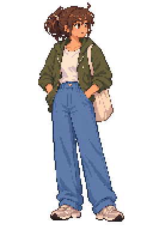

Fix a few pixels
Use a separate correction layer, sample a color, and save your own native copy.
Make one reversible edit →Aseprite • beginner field notes
Trace a pose by hand, or begin with automatically prepared pixels and correct them. Both routes are ready for your supplied character.
Start with just one standing pose, using the earlier crisp pixels and colors. Make one small mark before thinking about animation.
Open your two-route practice →
Resizing reduces the number of pixels. It cannot decide which eye shape, hand connection or fabric fold is right. That is the cleanup step. Zooming only makes the existing pixels look larger on your screen. Aseprite: Sprite Size ↗
Understand the drawing grid, character height, game view and window size. Try two visual comparisons, then write a four-line size plan.
Take the foundations lesson → · Size planning cardOne full-resolution, faded guide. Blank layers for your contour, colors and shading.
Get the hand-tracing starterThe earlier prepared standing sprite, with all its original layers and an empty Corrections layer.
Get the automatic starterFollow the two-route lesson → · Inspect the unchanged standing reference
Use a separate correction layer, sample a color, and save your own native copy.
Make one reversible edit →Make a smaller draft and put a blank drawing layer above a faded guide.
Build a tracing stack →Keep layers in .aseprite; make a transparent PNG for the game.
Check the exported image →Layered character practice file · Flat converted draft · Large concept cutout
A browser may download native files. In Aseprite, use File → Open to choose the copy in this course’s practice folder. Save under a new name before editing. The active art agent’s document is separate.
Keep the base visible; your new layer changes a small part of it.
The guide helps you draw. Hiding it reveals how much you have actually drawn.
These are optional skills for your own control. Agents can keep building and correcting production art while you learn.
Use the printable desk reference, inspect the official resource list, or ask the agent about any step that feels unclear.
Browse all 19 poses and open the layered clean/smear sequences. Original resolution and colors; the one-pose exercise remains your starting point.